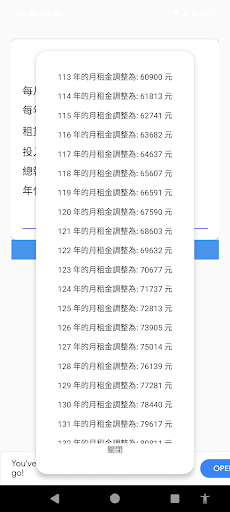

以少量欄位整理房價、租金及必要成本，不必先建立複雜試算表。
金融 APP · INTRODUCTION
房東投報快算
看房的熱情，先用一分鐘換成報酬率。
輸入買價、租金與持有成本，快速估算年化報酬率，協助房東與投資人比較不同物件的基本收益表現。
把功能留在
真正需要的時刻。
輸入買價、租金與持有成本，快速估算年化報酬率，協助房東與投資人比較不同物件的基本收益表現。
把每月現金流換算成年化指標，快速理解物件的基礎收益。
將管理、修繕與其他持有費用放進計算，避免只看表面租金。
用一致欄位重算多個方案，讓看房時的判斷更有共同基準。
完整商店
宣傳圖集。
依照商店目前提供的宣傳素材完整排列；圖片維持原始比例，在手機上會自動換行，不再裁切主要畫面。

使用以前，
值得知道。
這些提醒協助你理解資料界線、平台狀態與合適的使用方式。
估算工具
結果取決於輸入資料與假設，不代表未來實際收益。
專業判斷
貸款、稅務、法規與風險應另行諮詢合格專業人士。
平台狀態
Google Play 已提供下載，iOS 版本仍在開發中。